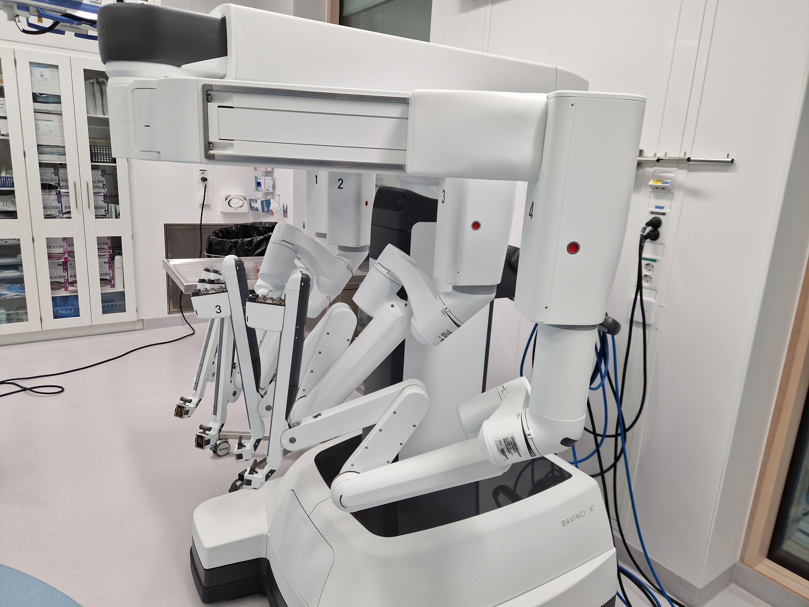
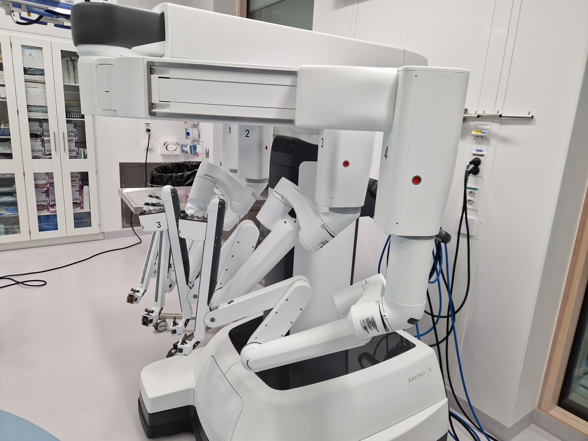

Cognitive Ergonomics and User Research on Robot-Assisted Surgery
- Type Group Project
- Course Cognitive Ergonomic
- Contribution User research, analysis of complex system
- Methods HTA, Nasa-TLX, ACTA, SAM, ECW & PUEA
Project description
The da Vinci XI surgical robot is a transformative tool for minimally invasive surgeries, offering precision and enhanced visualization. Our project focused on collaborating with two colorectal surgeons who specialize in robotic-assisted surgeries. Our goal was to investigate the cognitive ergonomics experienced by these expert users, with the aim of identifying and addressing potential issues.
Identified problems
Limited Situational Awareness
The restricted field of vision when surgical arms move outside the screen hinders the surgeon's situational awareness.
Reliance on Visual Feedback
Over-dependence on visual input increases cognitive load and reduces efficiency. Alternative modalities such as auditory or haptic feedback could improve this.
Minimal Automation
The lack of automation necessitates continuous manual control, leading to fatigue and reduced productivity.
 

Research approach
Heirarichal task analysis (HTA)
Broke down the tasks to specify how the tasks are performed in practice
Mental lorkload assesment (NASA-TLX)
Measured the mental workload of the surgeons during surgery. Highlighted the need decrease mental workload for critical tasks.
Cognitive task analysis (ACTA)
Helped us extract the mental models and user knowledge from our experts.
Wickens multiple resource model
helped us recognize that surgeons primarily relied on visual feedback, while other modalities, such as spatial auditory cues, were underutilized.
Situtaional awareness analysis
By evaluating how surgeons perceive and process information, we identified that when they are unable to see the surgical field, they lose situational awareness, which also impacts their mental workload.
User error analysis
The extended cognitive walkthrough and PUEA enabled us to identify and predict potential usability problems and user errors.